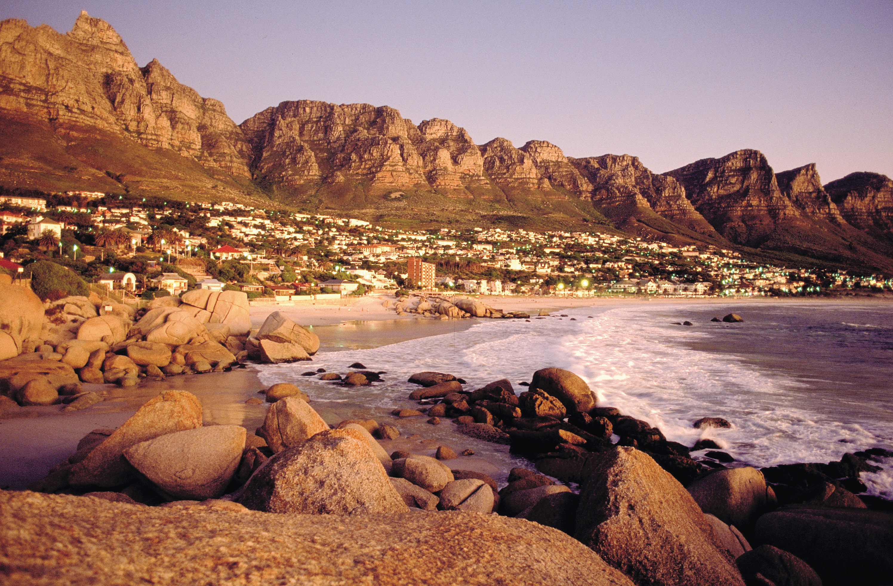
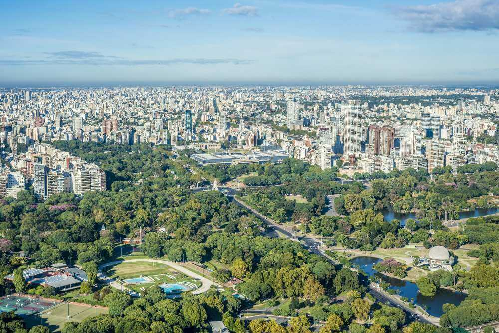

Kaapstad
Kaapstad (Afrikaans: Kaapstad, Engels: Cape Town, Xhosa: iKapa) bijgenaamd de Moederstad, is de hoofdstad van de provincie West-Kaap en is het wetgevend centrum van Zuid-Afrika. De stad maakt deel uit van de gemeente Kaapstad, die ongeveer 2,9 miljoen inwoners heeft (2001). Kaapstad is samen met Pretoria (uitvoerende macht) en Bloemfontein (rechterlijke macht) een van de hoofdsteden van Zuid-Afrika. Het is na Johannesburg de grootste stad van het land.
De stad, gelegen in de zuidwestelijke punt van Zuid-Afrika, was oorspronkelijk een verversingspost voor Nederlandse schepen die op weg waren naar Oost-Afrika, Indië of het Verre Oosten. Het was daarnaast een van de eerste permanente Europese nederzettingen ten zuiden van de Sahara. De Nederlanders in dienst van de Vereenigde Oost-Indische Compagnie maakten hier voor het eerst contact met de leider van de Goringkhoina in 1652.
Van een kleine havenstad groeide Kaapstad uit tot de grootste stad van Zuid-Afrika, maar raakte deze plaats in 1887 kwijt aan Johannesburg door de goudkoorts naar de Witwatersrand. Bij de volkstelling uit 2001 bleek dat Kaapstad de grootste Afrikaanssprekende gemeenschap was van Zuid-Afrika met 1,2 miljoen mensen.
Dankzij de natuur en de ligging aan de voet van de beroemde Tafelberg, is Kaapstad een populaire internationale bestemming voor toeristen.
Bron: Wikipedia.
Amsterdam
Amsterdam is de (titulaire) hoofdstad van Nederland. De stad, in het Amsterdams ook Mokum genoemd (afkomstig uit het Jiddisch), ligt in de provincie Noord-Holland, aan het IJ, het Noordzeekanaal en de monding van de Amstel. De gemeente Amsterdam is naar inwonertal de grootste gemeente van Nederland en telt 905.234 inwoners (31 januari 2022, CBS). Groot-Amsterdam telt 1.394.998 inwoners. Het aantal verschillende nationaliteiten in de gemeente (in 2007: 177) behoort tot de hoogste ter wereld.
Amsterdam dankt zijn naam aan de ligging bij een in de 13e eeuw aangelegde dam in de Amstel. De plaats kreeg kort na 1300 stadsrechten, werd in 1345 door het Mirakel van Amsterdam een pelgrimsoord en groeide in de Gouden Eeuw uit tot een van de belangrijkste haven- en handelssteden ter wereld. Een toestroom van buitenlanders uit vooral de Zuidelijke Nederlanden, Duitsland en de Scandinavische landen leidde vanaf het eind van de 16e eeuw tot stadsuitbreidingen, waaronder de laatste grachten van de fortificatie die nu als grachtengordel bekend is en in 2010 is toegevoegd aan de Werelderfgoedlijst van UNESCO.
Bezienswaardigheden en attracties in Amsterdam zijn het Rijksmuseum, het Stedelijk Museum, het Van Gogh Museum en Het Scheepvaartmuseum, het Anne Frank Huis, het Concertgebouw, Muziekgebouw aan 't IJ en EYE Filmmuseum, dierentuin Artis, de Wallen, de coffeeshops en de Johan Cruijff ArenA. De stad telt twee universiteiten en meerdere hogescholen.
Bron: Wikipedia.

Buenos Aires
Buenos Aires (Spaans voor: gunstige winden) is de hoofdstad van Argentinië, en ook het economische en culturele hart ervan. Met ruim 3.000.000 inwoners is het de grootste stad van het land. In de agglomeratie Groot-Buenos Aires, liggend aan de Río de la Plata (Spaans: rivier van het zilver), wonen meer dan 12 miljoen mensen. Aangezien Groot-Buenos Aires bijna een derde van de Argentijnse bevolking huisvest, overheerst het met zijn economie de rest van het land.
Buenos Aires ligt aan de zeer brede rivier en heeft een haven. De stad wordt aan de landzijde geheel omsloten door de provincie Buenos Aires, maar maakt zelf geen deel uit van die provincie. Buenos Aires is een autonome of zelfstandige stad en valt buiten de provinciale indeling van Argentinië.
Dankzij haar talloze winkels en boetieks, haar architectuur, haar culturele leven, restaurants en haar kosmopolitische bevolking van overwegend Italiaanse, Spaanse, Franse, Duitse, Engelse, Oost-Europese, Arabische en Aziatische herkomst, staat Buenos Aires ook als het Parijs van het zuiden bekend, alhoewel het door vele economische problemen veel van zijn vroegere grandeur heeft verloren. De stad is een van de meest Europees aandoende steden van Zuid-Amerika en van het hele zuidelijk halfrond. Ooit kon zij met haar noordelijke tegenspelers wedijveren. De stad beleefde haar gouden tijd tussen 1880 en 1920, toen Argentinië tot de tien welvarendste landen van de wereld behoorde en Buenos Aires nieuwelingen uit Europa lokte die hier een beter bestaan probeerden te vinden.
Bron: Wikipedia.
New York
New York is de grootste stad van de Verenigde Staten van Amerika. Dankzij de leidinggevende en invloedrijke rol in handel, financiën, media, public relations, kunst, mode en educatie geldt zij als een van de belangrijkste wereldsteden. De stad wordt ook New York City of NYC genoemd om haar te onderscheiden van de staat New York, waarin zij ligt. New York is niet de hoofdstad van die staat, dat is Albany.
De agglomeratie van New York vormt een van de grootste stedelijke gebieden ter wereld. De stad is de dichtstbevolkte grote stad in de Verenigde Staten met circa 8,5 miljoen inwoners verspreid over een gebied van 789,43 km². De stad New York bestaat uit vijf boroughs of stadsdelen: The Bronx, Brooklyn, Manhattan, Queens en Staten Island. Veel monumenten en wijken van de stad zijn wereldberoemd en staan vaak symbool voor de Verenigde Staten in het algemeen. Zo zijn er het Vrijheidsbeeld, Wall Street, wolkenkrabbers zoals het Empire State Building en het Chrysler Building, het oude, in 2001 door terroristen vernietigde, World Trade Center met de Twin Towers en de opvolger hiervan, het in 2014 geopende One World Trade Center.
De drukte en levendigheid geven de stad de bijnaam The City That Never Sleeps ("de stad die nooit slaapt"). Een andere populaire bijnaam is the Big Apple.
Bron: Wikipedia.